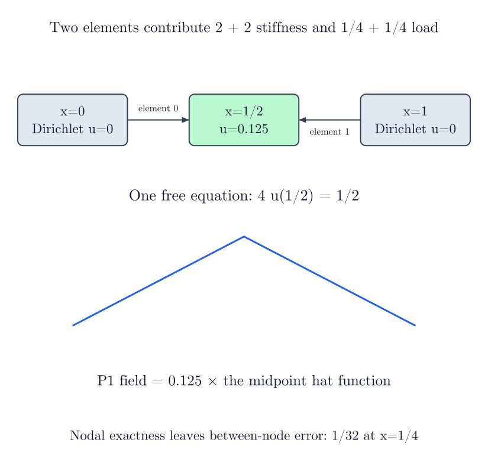
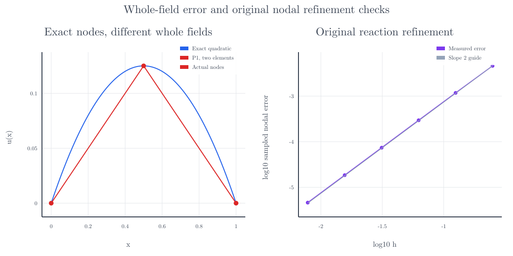
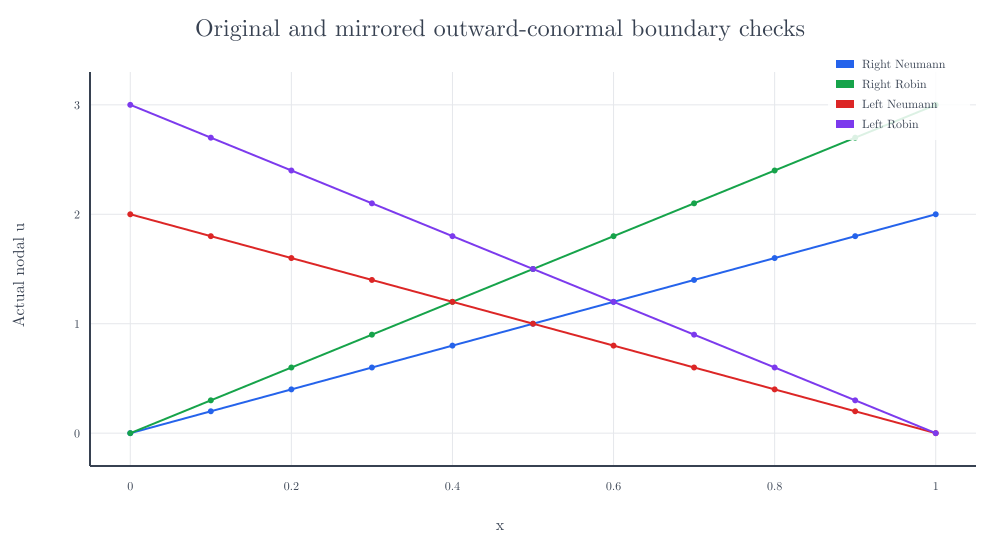
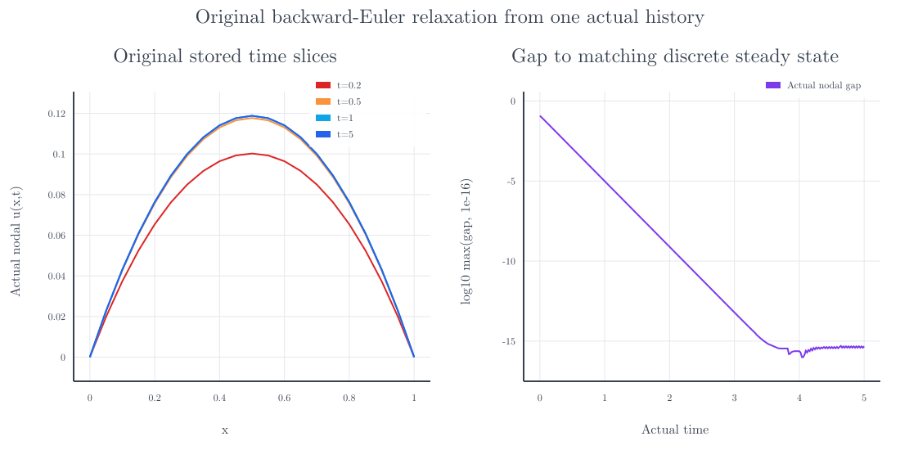
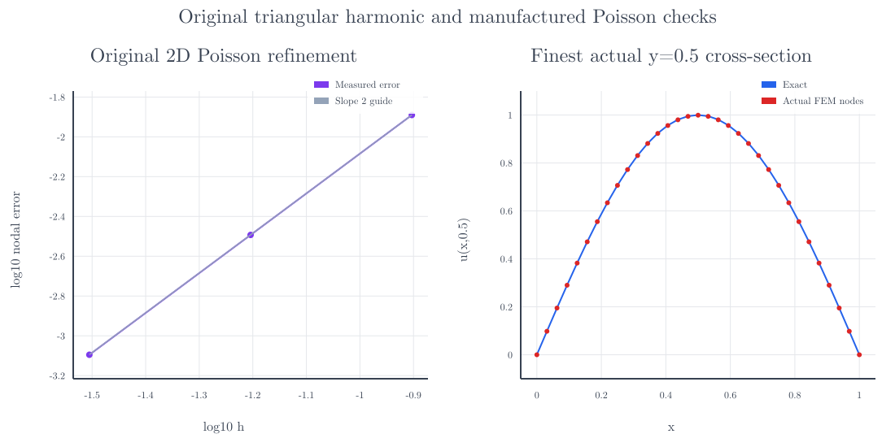
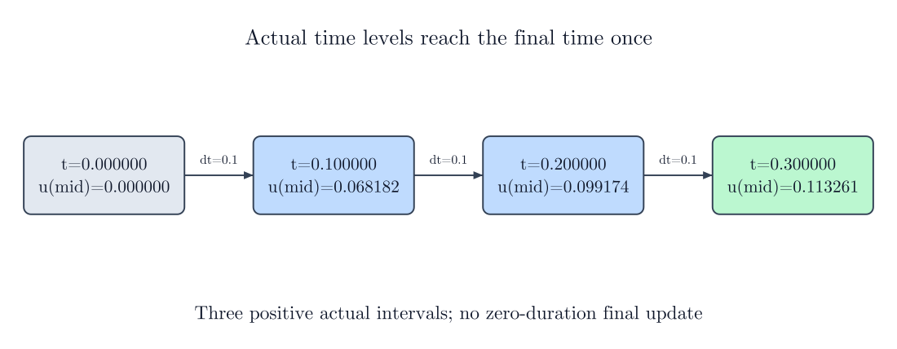

Finite Elements: Nodal Values, Whole Fields and Actual Time Levels
Abstract
Solve steady and transient boundary-value problems with the native one- and two-dimensional P1 finite-element APIs. A two-element interval shows how a single free coefficient is determined, and why exact values at mesh nodes can coexist with error between those nodes. We retain the original diffusion, reaction, Neumann, Robin, transient and triangular Poisson examples. Actual refinement errors and time slices are computed in complete C++ programs. The named-source transient entry point shares the steady source definitions and the canonical backward-Euler loop. A rounded final-time example makes a corrected duplicate-time failure visible. Norm claims, stability assumptions, quadrature and boundary signs are kept distinct from measured outcomes.
Two elements determine one coefficient
Solve −u''=1 on [0,1] with zero endpoint values. On the mesh [0,1/2,1], the only free coefficient is the midpoint value. Each length-1/2 element contributes 1/h=2 to its diagonal stiffness and h/2=1/4 to its load. The assembled free equation is therefore 4u_1=1/2, giving u_1=1/8. The program obtains that value from the native solve and checks the tiny equation.
The exact solution is x(1−x)/2, which agrees at all three nodes. The P1 field is a straight line on each element, not a quadratic. At x=1/4, native linear interpolation gives 1/16, while the exact quadratic is 3/32: the error is 1/32. This distinction is central to interpreting every later error table.
#include <dm/dm.hpp>
namespace dm=datamunge;
int main(){
std::filesystem::create_directories("build");
const auto mesh=dm::fem::make_uniform_mesh1d(0,1,2);const auto result=dm::fem::FEM1D::solve_builtin(mesh,{1},{0},"constant",{1},{},{});
std::print("| node | coordinate | actual FEM value | exact quadratic |\n| ---: | ---: | ---: | ---: |\n");for(std::size_t i=0;i<result.size();++i){const auto x=result.nodes[i];std::print("| {} | {} | {} | {} |\n",i,x,result.u[i],x*(1-x)/2);}
const double p1=dm::algorithms::linear_interpolate(result.nodes,result.u,.25),exact=.25*.75/2;std::print("\nTiny free equation: 4*u_mid = {}; actual u_mid {}.\n",4*result.u[1],result.u[1]);std::print("Between nodes at x=0.25: P1 {}; exact {}; absolute error {}.\n",p1,exact,std::abs(p1-exact));
dm::graphics::Diagram g(58,1100);dm::graphics::DiagramNodeStyle box;box.width=3.2;box.height=1.5;box.font_size=23;box.fill={226,232,240};g.node("left",{0,0},"x=0\nDirichlet u=0",box);box.fill={187,247,208};g.node("middle",{5,0},std::format("x=1/2\nu={}",result.u[1]),box);box.fill={226,232,240};g.node("right",{10,0},"x=1\nDirichlet u=0",box).edge("left","middle","element 0").edge("right","middle","element 1");g.text({5,2.7},"Two elements contribute 2 + 2 stiffness and 1/4 + 1/4 load",25).text({5,-2.2},"One free equation: 4 u(1/2) = 1/2",26);
dm::graphics::DiagramStroke stroke;stroke.color={37,99,235};stroke.width=3;g.path({{0,-6},{5,-3.4},{10,-6}},stroke).text({5,-7.6},"P1 field = 0.125 × the midpoint hat function",25).text({5,-9.2},"Nodal exactness leaves between-node error: 1/32 at x=1/4",23).save_svg("build/fem_tiny.svg");if(result.u[1]!=.125||std::abs(p1-exact)!=.03125)throw std::runtime_error("tiny FEM identity failed");
}| node | coordinate | actual FEM value | exact quadratic |
|---|---|---|---|
| 0 | 0 | 0 | 0 |
| 1 | 0.5 | 0.125 | 0.125 |
| 2 | 1 | 0 | 0 |
Tiny free equation: 4*u_mid = 0.5; actual u_mid 0.125. Between nodes at x=0.25: P1 0.0625; exact 0.09375; absolute error 0.03125.

From the weak form to the native interval system
For −(p u')'+q u=f, multiply by a test function v that vanishes at Dirichlet endpoints and integrate by parts. The resulting equation is
Choose continuous piecewise-linear trial and test functions on the same mesh. With u_h=sum_j U_j phi_j, the coefficient equation is KU=F. Each interval of length h and constant p_e,q_e contributes
Only neighboring hats overlap, giving a tridiagonal system. The implementation uses symmetric Dirichlet elimination and the Thomas direct solver. It requires valid finite increasing mesh nodes, compatible coefficient lengths and a finite, nonsingular system with nonzero elimination pivots; it does not supply a pivoting or conditioning certificate. Constant/per-element p and q are supported.
The interval load uses three-point Gauss–Legendre quadrature, exact through degree five of the integrand. Since the integrand includes a linear basis function, this exactly integrates polynomial sources through degree four on an element. Smooth sine loads are quadrature approximations. These choices are part of the native method, not extra report-local assembly code.
Retain the original interval problems and measure the right error
The original pure-diffusion meshes contain 2,5,20 elements. Their quadratic solution is nodally exact to rounding, while its piecewise-linear interpolant still differs between nodes. The first plot uses the two-element case. For that quadratic, the maximum interpolation error on an element is h²/8.
The original reaction problem is −u''+u=(pi²+1)sin(pi x) with zero endpoint values, so its manufactured exact solution is sin(pi x). The refinement table uses the same 4,8,16,32,64,128 element counts. Native error scans evaluate the actual P1 field and reference at mesh nodes; they are sampled maxima, not certified suprema over the interval. The slope-two guide is normalized to the first measured error and is a visual comparison, not a new error bound.
For regular/coercive problems and suitable meshes, standard P1 estimates give first-order H1 and second-order L2 error under the required solution and dual regularity. The L2 duality argument does not automatically establish a generic pointwise or nodal second-order bound. The rates below describe this particular smooth problem, mesh sequence, quadrature and solver accuracy.
#include <dm/dm.hpp>
namespace dm=datamunge;
int main(){
std::filesystem::create_directories("build");
std::print("| pure-diffusion elements | actual maximum nodal error |\n| ---: | ---: |\n");for(std::size_t n:{2,5,20}){const auto r=dm::fem::FEM1D::solve_builtin(dm::fem::make_uniform_mesh1d(0,1,n),{1},{0},"constant",{1},{},{});const auto e=dm::algorithms::interpolation_error_scan([&](double x){return dm::algorithms::linear_interpolate(r.nodes,r.u,x);},[](double x){return x*(1-x)/2;},r.nodes);std::print("| {} | {:.10e} |\n",n,e.max_abs_error);}
const auto tiny=dm::fem::FEM1D::solve_builtin(dm::fem::make_uniform_mesh1d(0,1,2),{1},{0},"constant",{1},{},{});std::vector<double>x,truth;for(int i=0;i<=200;++i){const double z=i/200.;x.push_back(z);truth.push_back(z*(1-z)/2);}auto field=dm::graphics::RPlot::create();field.line(x,truth,"Exact quadratic",{37,99,235},2).line(tiny.nodes,tiny.u,"P1, two elements",{220,38,38},2).points(tiny.nodes,tiny.u,"Actual nodes",{220,38,38},5).title("Exact nodes, different whole fields").x_label("x").y_label("u(x)");
const double pi=3.14159265358979323846;std::vector<double>lh,le,guide;double previous=0,first=0;std::print("\n| reaction elements | h | actual maximum nodal error | observed order |\n| ---: | ---: | ---: | :--- |\n");for(std::size_t n:{4,8,16,32,64,128}){const auto r=dm::fem::FEM1D::solve_builtin(dm::fem::make_uniform_mesh1d(0,1,n),{1},{1},"sine",{pi*pi+1,pi,0},{},{});const auto e=dm::algorithms::interpolation_error_scan([&](double z){return dm::algorithms::linear_interpolate(r.nodes,r.u,z);},[=](double z){return std::sin(pi*z);},r.nodes);const double h=1./n;std::print("| {} | {:.8f} | {:.10e} | {} |\n",n,h,e.max_abs_error,previous?std::format("{:.6f}",std::log2(previous/e.max_abs_error)):"initial");if(!first)first=e.max_abs_error;lh.push_back(std::log10(h));le.push_back(std::log10(e.max_abs_error));guide.push_back(std::log10(first*std::pow(h/.25,2)));previous=e.max_abs_error;}
auto convergence=dm::graphics::RPlot::create();convergence.line(lh,le,"Measured error",{124,58,237},2).points(lh,le,"",{124,58,237},4).line(lh,guide,"Slope 2 guide",{148,163,184},1.5).title("Original reaction refinement").x_label("log10 h").y_label("log10 sampled nodal error");dm::graphics::RLayout::create(1,2).add(field).add(convergence).size(1100,550).title("Whole-field error and original nodal refinement checks").fit_panels().save_svg("build/fem_interval.svg");
}| pure-diffusion elements | actual maximum nodal error |
|---|---|
| 2 | 0.0000000000e+00 |
| 5 | 2.7755575616e-17 |
| 20 | 3.4694469520e-16 |
| reaction elements | h | actual maximum nodal error | observed order |
|---|---|---|---|
| 4 | 0.25000000 | 4.6001273297e-03 | initial |
| 8 | 0.12500000 | 1.1744884464e-03 | 1.969641 |
| 16 | 0.06250000 | 2.9508929800e-04 | 1.992809 |
| 32 | 0.03125000 | 7.3863085469e-05 | 1.998226 |
| 64 | 0.01562500 | 1.8471429426e-05 | 1.999558 |
| 128 | 0.00781250 | 4.6182110536e-06 | 1.999890 |

Boundary data: conormal signs at both ends
The API uses the outward conormal p du/dn, with du/dn=−u' on the left and +u' on the right. Thus a right Neumann value two with a zero left Dirichlet value gives u=2x. Mirroring the conditions gives u=2(1−x). Physical diffusive outward flux is −p du/dn, so the API's positive conormal must not be called positive outward heat flow without changing the sign convention.
For Robin data p du/dn+alpha(u−u_ambient)=0, move the alpha*u term to the matrix and alpha*u_ambient to the load. The original right Robin condition alpha=3,u_ambient=4 with zero left value gives u=3x. Its mirror gives u=3(1−x). Each test retains a Dirichlet constraint, avoiding the constant nullspace of pure Neumann diffusion. Nonnegative reaction/Robin coefficients and appropriate constraints are relevant to the coercive stability model.
#include <dm/dm.hpp>
namespace dm=datamunge;
int main(){
std::filesystem::create_directories("build");
const auto mesh=dm::fem::make_uniform_mesh1d(0,1,10);const dm::fem::BoundaryCondition1D zero{},neumann{dm::fem::BCType::Neumann,2,0},robin{dm::fem::BCType::Robin,4,3};auto plot=dm::graphics::RPlot::create();std::print("| case | u(0) | u(1) | actual maximum nodal error |\n| :--- | ---: | ---: | ---: |\n");
const std::vector<std::string>names{"Original right Neumann","Original right Robin","Mirror left Neumann","Mirror left Robin"};const std::vector<std::string>legend{"Right Neumann","Right Robin","Left Neumann","Left Robin"};const std::vector<dm::graphics::RGB>colours{{37,99,235},{22,163,74},{220,38,38},{124,58,237}};
for(int which=0;which<4;++which){const bool mirror=which>=2;const double slope=which%2?3:2;const auto natural=which%2?robin:neumann;const auto r=dm::fem::FEM1D::solve_builtin(mesh,{1},{0},"zero",{},mirror?natural:zero,mirror?zero:natural);const auto e=dm::algorithms::interpolation_error_scan([&](double x){return dm::algorithms::linear_interpolate(r.nodes,r.u,x);},[=](double x){return slope*(mirror?1-x:x);},r.nodes);std::print("| {} | {:.9f} | {:.9f} | {:.10e} |\n",names[which],r.u.front(),r.u.back(),e.max_abs_error);plot.line(r.nodes,r.u,legend[which],colours[which],2).points(r.nodes,r.u,"",colours[which],3);if(e.max_abs_error>1e-12)throw std::runtime_error("linear boundary check failed");}
plot.title("Original and mirrored outward-conormal boundary checks").x_label("x").y_label("Actual nodal u").size(1000,550).save_svg("build/fem_boundaries.svg");
}| case | u(0) | u(1) | actual maximum nodal error |
|---|---|---|---|
| Original right Neumann | 0.000000000 | 2.000000000 | 1.1102230246e-16 |
| Original right Robin | 0.000000000 | 3.000000000 | 2.2204460493e-16 |
| Mirror left Neumann | 2.000000000 | 0.000000000 | 1.7763568394e-15 |
| Mirror left Robin | 3.000000000 | 0.000000000 | 1.3322676296e-15 |

Transient heat: reuse one actual history
Spatial Galerkin discretization gives M U_dot+K U=F, where M is the unit mass matrix for the time derivative, distinct from the reaction contribution inside K. Backward Euler on an actual positive time interval delta_t gives
The named-source transient API uses the same source constructor as the steady API and delegates to the same actual time loop as the live-source entry point. No report-local source subclass or second time integrator is required. The source and boundary data describe a fixed spatial model; the live callback is reevaluated during quadrature on every time advance.
The original model uses twenty elements, p=1,q=0.5, source one, zero endpoint and initial values, and nominal dt=0.02 through t=5. One actual full history supplies the original four end-time checks and the plotted slices. Each comparison uses the matching discrete steady solution, so this is a relaxation check, not a continuum time-discretization error measurement.
For a coercive semidiscrete problem, the homogeneous error modes have amplification 1/(1+lambda*delta_t), with positive generalized eigenvalues K v=lambda M v. This gives backward Euler's unrestricted-step stability for that model. It does not guarantee accuracy for large steps, nor remove finite arithmetic or linear-solver limitations. Forward Euler instead needs |1−lambda*delta_t|≤1, so its actual bound depends on the largest eigenvalue; h² is a scaling guide rather than a universal numerical step threshold.
#include <dm/dm.hpp>
namespace dm=datamunge;
int main(){
std::filesystem::create_directories("build");
const auto mesh=dm::fem::make_uniform_mesh1d(0,1,20);const auto steady=dm::fem::FEM1D::solve_builtin(mesh,{1},{.5},"constant",{1},{},{});const auto history=dm::fem::FEM1D::solve_transient_builtin(mesh,{1},{.5},"constant",{1},{},{},std::vector<double>(21,0),5,.02);std::vector<double>times,gaps;auto profiles=dm::graphics::RPlot::create();
for(std::size_t j=0;j<history.times.size();++j){const auto e=dm::algorithms::interpolation_error_scan([&](double x){return dm::algorithms::linear_interpolate(history.nodes,history.u[j],x);},[&](double x){return dm::algorithms::linear_interpolate(steady.nodes,steady.u,x);},history.nodes);times.push_back(history.times[j]);gaps.push_back(std::log10(std::max(e.max_abs_error,1e-16)));}
std::print("| original end time | actual stored time | actual maximum nodal gap to discrete steady state |\n| ---: | ---: | ---: |\n");for(double time:{.5,1.,2.,5.}){const auto it=std::find(history.times.begin(),history.times.end(),time);if(it==history.times.end())throw std::runtime_error("original time absent");const auto j=static_cast<std::size_t>(it-history.times.begin());double worst=0;for(std::size_t i=0;i<steady.size();++i)worst=std::max(worst,std::abs(history.u[j][i]-steady.u[i]));std::print("| {:.1f} | {:.17g} | {:.10e} |\n",time,history.times[j],worst);}
const std::vector<double>selected{.2,.5,1,5};const std::vector<dm::graphics::RGB>colours{{220,38,38},{251,146,60},{14,165,233},{37,99,235}};for(std::size_t k=0;k<selected.size();++k){const auto it=std::find(history.times.begin(),history.times.end(),selected[k]);if(it==history.times.end())throw std::runtime_error("slice time absent");const auto j=static_cast<std::size_t>(it-history.times.begin());profiles.line(history.nodes,history.u[j],std::format("t={}",selected[k]),colours[k],2);}profiles.title("Original stored time slices").x_label("x").y_label("Actual nodal u(x,t)");auto relaxation=dm::graphics::RPlot::create();relaxation.line(times,gaps,"Actual nodal gap",{124,58,237},2).title("Gap to matching discrete steady state").x_label("Actual time").y_label("log10 max(gap, 1e-16)");std::print("\nTransient history: nodes {}; stored frames {}; actual advances {}; final time {}.\n",history.num_nodes(),history.num_steps(),history.num_steps()-1,history.times.back());dm::graphics::RLayout::create(1,2).add(profiles).add(relaxation).size(1100,550).title("Original backward-Euler relaxation from one actual history").fit_panels().save_svg("build/fem_transient.svg");
}| original end time | actual stored time | actual maximum nodal gap to discrete steady state |
|---|---|---|
| 0.5 | 0.5 | 1.0947868018e-03 |
| 1.0 | 1 | 9.7604372403e-06 |
| 2.0 | 2 | 7.7579831448e-10 |
| 5.0 | 5 | 4.7184478547e-16 |
Transient history: nodes 21; stored frames 251; actual advances 250; final time 5.

Preserve the triangular two-dimensional examples
For −k Delta u=f, linear basis functions on each triangle have constant gradients. Their stiffness contribution is k*area*(grad phi_i dot grad phi_j). The native mesh uses counterclockwise triangles, and the solver applies Dirichlet elimination before its sparse conjugate-gradient solve.
The three edge-midpoint load rule is exact through degree two of the integrand; therefore it integrates linear spatial sources times P1 test functions exactly. It is not an exact rule for arbitrary quadratic source terms times those tests. The sine load below uses numerical quadrature. The selected cases measure actual errors; the public basic result does not expose a CG convergence status or an independently certified algebraic residual.
We retain the original 6-by-6 harmonic linear test u=x+2y and the original 8,16,32 cell-per-side Poisson refinements with exact solution sin(pi x)sin(pi y). The table's maximum is over mesh nodes. A sampled nodal rate near two on this structured sequence does not establish a general max-norm theorem on arbitrary meshes. The final y=0.5 slice is extracted from the actual finest result.
#include <dm/dm.hpp>
namespace dm=datamunge;
int main(){
std::filesystem::create_directories("build");
const double pi=3.14159265358979323846;auto linear_mesh=dm::fem::make_rectangular_mesh2d(0,0,1,1,6,6);auto boundary=dm::fem::boundary_nodes(linear_mesh);std::vector<double>values;for(int index:boundary){const auto p=linear_mesh.nodes[static_cast<std::size_t>(index)];values.push_back(p.x+2*p.y);}const auto harmonic=dm::fem::FEM2D::solve_builtin(linear_mesh,1,"zero",{},boundary,values);double linear_error=0;for(std::size_t i=0;i<harmonic.size();++i)linear_error=std::max(linear_error,std::abs(harmonic.u[i]-(harmonic.nodes[i].x+2*harmonic.nodes[i].y)));std::print("Original 6x6 harmonic case: nodes {}; maximum nodal error {:.10e}.\n",harmonic.size(),linear_error);if(linear_error>1e-11)throw std::runtime_error("harmonic test failed");
std::vector<double>lh,le,guide;double previous=0,first=0;dm::fem::FEM2DResult finest;std::print("\n| original cells per side | nodes | actual maximum nodal error | observed order |\n| ---: | ---: | ---: | :--- |\n");for(std::size_t n:{8,16,32}){const auto mesh=dm::fem::make_rectangular_mesh2d(0,0,1,1,n,n);const auto edges=dm::fem::boundary_nodes(mesh);auto r=dm::fem::FEM2D::solve_builtin(mesh,1,"sine",{2*pi*pi,pi,pi},edges,std::vector<double>(edges.size(),0));double worst=0;for(std::size_t i=0;i<r.size();++i)worst=std::max(worst,std::abs(r.u[i]-std::sin(pi*r.nodes[i].x)*std::sin(pi*r.nodes[i].y)));std::print("| {} | {} | {:.10e} | {} |\n",n,r.size(),worst,previous?std::format("{:.6f}",std::log2(previous/worst)):"initial");if(!first)first=worst;lh.push_back(std::log10(1./n));le.push_back(std::log10(worst));guide.push_back(std::log10(first*std::pow(8./n,2)));previous=worst;finest=std::move(r);}
auto convergence=dm::graphics::RPlot::create();convergence.line(lh,le,"Measured error",{124,58,237},2).points(lh,le,"",{124,58,237},4).line(lh,guide,"Slope 2 guide",{148,163,184},1.5).title("Original 2D Poisson refinement").x_label("log10 h").y_label("log10 nodal error");std::vector<double>x,computed,reference;for(std::size_t i=0;i<=32;++i){const auto index=16*33+i;const auto p=finest.nodes[index];if(p.y!=.5)throw std::runtime_error("slice row mismatch");x.push_back(p.x);computed.push_back(finest.u[index]);reference.push_back(std::sin(pi*p.x)*std::sin(pi*p.y));}auto slice=dm::graphics::RPlot::create();slice.line(x,reference,"Exact",{37,99,235},2).points(x,computed,"Actual FEM nodes",{220,38,38},3).title("Finest actual y=0.5 cross-section").x_label("x").y_label("u(x,0.5)");dm::graphics::RLayout::create(1,2).add(convergence).add(slice).size(1100,550).title("Original triangular harmonic and manufactured Poisson checks").fit_panels().save_svg("build/fem_triangles.svg");
}Original 6x6 harmonic case: nodes 49; maximum nodal error 1.3322676296e-15.
| original cells per side | nodes | actual maximum nodal error | observed order |
|---|---|---|---|
| 8 | 81 | 1.2876010384e-02 | initial |
| 16 | 289 | 3.2143130902e-03 | 2.002103 |
| 32 | 1089 | 8.0328727584e-04 | 2.000523 |

Actual time levels, named sources and output limits
The former time loop used ceil(t_end/dt) as an unconditional advance count. For t_end=0.30000000000000004 and dt=0.1, a rounded product already reaches that end at step three. The old fourth iteration repeated the time, making its actual interval zero and its final solution nonfinite. The corrected core stops once the endpoint is reached and rejects any nonadvancing rounded time before assembly. Its planned final step uses t_end directly, avoiding an unnecessary overflowing nominal product for very large finite time controls.
Time controls are positive and finite. Frame/container/solution-value counts are checked before output allocation or source evaluations. Spatial geometry, finite coefficient/source arithmetic and nonzero Thomas pivots remain caller preconditions; the basic solver does not certify them for arbitrary edited meshes or coefficients. Returned output owns its nodes, times and rows. It stores the full history rather than an optional trace: for S actual advances and N nodes, it holds N coordinates, S+1 times and N(S+1) solution scalars, excluding capacities/allocator bytes and assembly temporaries. No optional history quota is imposed; choosing a large output still has a real memory cost.
The final program checks the corrected time edge, all five named source families, a shortened interval, rejected controls and a copied result's independence from later edits. It also compares a single-interior-node decay with the closed backward-Euler mode 1/(1+12*dt), an independently derived small-system reference rather than another finite-element implementation.
#include <dm/dm.hpp>
namespace dm=datamunge;
int main(){
std::filesystem::create_directories("build");
const auto mesh=dm::fem::make_uniform_mesh1d(0,1,2);auto history=dm::fem::FEM1D::solve_transient_builtin(mesh,{1},{0},"constant",{1},{},{},{0,0,0},.30000000000000004,.1);std::print("| actual frame | actual time | actual interval | midpoint value | finite |\n| ---: | ---: | ---: | ---: | :--- |\n");for(std::size_t j=0;j<history.times.size();++j){const double interval=j?history.times[j]-history.times[j-1]:0;std::print("| {} | {:.17g} | {:.17g} | {:.10f} | {} |\n",j,history.times[j],interval,history.u[j][1],std::isfinite(history.u[j][1]));if(j&&!(interval>0))throw std::runtime_error("duplicate actual time");}std::print("\nCorrected rounded-end case: frames {}; advances {}; final finite {}.\n",history.num_steps(),history.num_steps()-1,std::isfinite(history.u.back()[1]));
std::print("\n| named spatial source | midpoint after one dt=0.1 step |\n| :--- | ---: |\n");const std::vector<std::string>names{"zero","constant","linear","polynomial","sine"};const std::vector<std::vector<double>>params{{},{1},{1,0},{0,0,1},{1,3.14159265358979323846,0}};for(std::size_t i=0;i<names.size();++i){const auto r=dm::fem::FEM1D::solve_transient_builtin(mesh,{1},{0},names[i],params[i],{},{},{0,0,0},.1,.1);std::print("| {} | {:.10f} |\n",names[i],r.u.back()[1]);}
const auto decay=dm::fem::FEM1D::solve_transient_builtin(mesh,{1},{0},"zero",{},{},{},{0,1,0},.5,.5);std::print("\nOne-interior decay: actual {:.12f}; independent backward-Euler value {:.12f}.\n",decay.u.back()[1],1./7);if(std::abs(decay.u.back()[1]-1./7)>1e-14)throw std::runtime_error("modal decay check failed");const auto partial=dm::fem::FEM1D::solve_transient_builtin(mesh,{1},{0},"constant",{1},{},{},{0,0,0},.25,.1);std::print("Partial-step history: frames {}; final time {}; last interval {:.17g}.\n",partial.num_steps(),partial.times.back(),partial.times.back()-partial.times[partial.times.size()-2]);auto copy=history;history.u.back()[1]=99;std::print("Owned copy retains finite midpoint {}; edited original midpoint {}.\n",std::isfinite(copy.u.back()[1]),history.u.back()[1]);
int rejected=0;try{(void)dm::fem::FEM1D::solve_transient_builtin(mesh,{1},{0},"missing",{},{},{},{0,0,0},.1,.1);}catch(const std::invalid_argument&){++rejected;}try{(void)dm::fem::FEM1D::solve_transient_builtin(mesh,{1},{0},"zero",{},{},{},{0,0,0},.1,std::numeric_limits<double>::quiet_NaN());}catch(const std::invalid_argument&){++rejected;}try{(void)dm::fem::FEM1D::solve_transient_builtin(mesh,{1},{0},"zero",{},{},{},{0,0,0},1,1e-20);}catch(const std::length_error&){++rejected;}std::print("Unknown-source/nonfinite-time/unrepresentable-frame rejections {}/3.\n",rejected);if(rejected!=3||copy.num_steps()!=4||!std::isfinite(copy.u.back()[1]))throw std::runtime_error("time controls failed");
dm::graphics::Diagram g(58,1100);dm::graphics::DiagramNodeStyle box;box.width=3.5;box.height=1.7;box.font_size=22;for(std::size_t j=0;j<copy.times.size();++j){box.fill=j==0?dm::graphics::RGB{226,232,240}:j+1==copy.times.size()?dm::graphics::RGB{187,247,208}:dm::graphics::RGB{191,219,254};g.node(std::to_string(j),{5.*j,0},std::format("t={:.6f}\nu(mid)={:.6f}",copy.times[j],copy.u[j][1]),box);if(j)g.edge(std::to_string(j-1),std::to_string(j),std::format("dt={:.6g}",copy.times[j]-copy.times[j-1]));}g.text({7.5,3},"Actual time levels reach the final time once",27).text({7.5,-3},"Three positive actual intervals; no zero-duration final update",24).save_svg("build/fem_time_controls.svg");
}| actual frame | actual time | actual interval | midpoint value | finite |
|---|---|---|---|---|
| 0 | 0 | 0 | 0.0000000000 | true |
| 1 | 0.10000000000000001 | 0.10000000000000001 | 0.0681818182 | true |
| 2 | 0.20000000000000001 | 0.10000000000000001 | 0.0991735537 | true |
| 3 | 0.30000000000000004 | 0.10000000000000003 | 0.1132607062 | true |
Corrected rounded-end case: frames 4; advances 3; final finite true.
| named spatial source | midpoint after one dt=0.1 step |
|---|---|
| zero | 0.0000000000 |
| constant | 0.0681818182 |
| linear | 0.0340909091 |
| polynomial | 0.0198863636 |
| sine | 0.0552637766 |
One-interior decay: actual 0.142857142857; independent backward-Euler value 0.142857142857. Partial-step history: frames 4; final time 0.25; last interval 0.049999999999999989. Owned copy retains finite midpoint true; edited original midpoint 99. Unknown-source/nonfinite-time/unrepresentable-frame rejections 3/3.

References
- MFEM, [Weak Formulations](https://mfem.org/fem_weak_form/): basis expansion, Galerkin equations and the integration-by-parts boundary convention.
- Douglas N. Arnold (2012-12-15 version), Numerical Analysis of Partial Differential Equations, University of Minnesota MATH 8445 lecture notes, chapter 4 sections 8.1–8.2 and chapter 5 section 2. [Author-hosted notes](https://www-users.cse.umn.edu/~arnold/8445.f12/notes.pdf). The norm estimates require regularity/coercivity assumptions; the native quadrature, boundary/source choices and actual time grid are specified above.